Activity: Circular patterns
This activity demonstrates the circular patterning features.
Create and then modify a circular pattern of holes.
Click here to download the activity file.

-
Open pattern_circle.par.
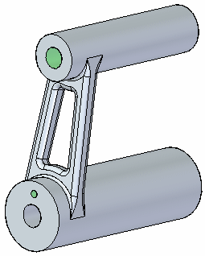
Zoom in on the lower end of the arm and select the hole.
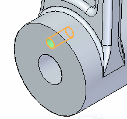
On the Home tab→Pattern group, choose the Circular pattern command.
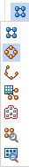
Move the cursor (rotation axis) over the center of the circular plane shown. When the center symbol displays, click to define the center of rotation.
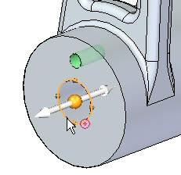
A preview is shown with the default Count set to 4.
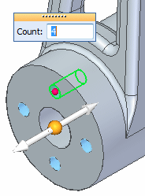
Change the Count to 6 and press Enter.
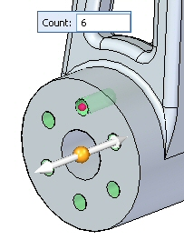
Left-click in the part window to end the pattern command.
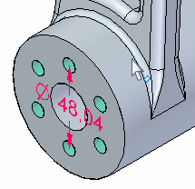
Select the pattern diameter dimension and change it to 50. Turn off the dimension display.
Select the circular pattern and then click the Edit Definition handle to access the Pattern command bar. Select the Circle/Arc Pattern button
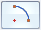
.Click the direction arrow to define the arc angle in a clockwise direction. Change the arc angle to 270°.
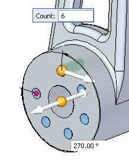
On the command bar, click Accept. Click in the part window to end command.
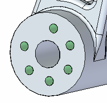
Press Tab to change the focus from one dialog to another, such as when changing from the Count to the Arc Angle dialog box.
Select the circular pattern set from PathFinder. Select the pattern handle to access the command bar. Change the Fit style to Fixed.
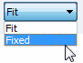
Set the angle to 30°.
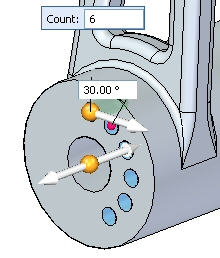
The Count and Angle control the pattern in the Fixed fill mode.
Modify the incremental angle to 45°, leaving the same count of 6 holes.
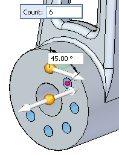
Change the Fixed style to Fit.
On the command bar, select the Circle/Arc Pattern option to return to a full circle. Accept the pattern and left-click to finish.
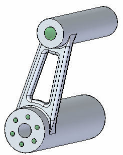
The holes have threads associated with them. To see the threads, on the View tab→Style group, choose the View Overrides command .
On the Rendering tab, select the Textures check box.
Notice the threads on the patterned holes.
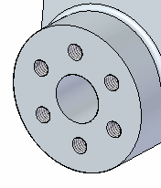
Save and close this file.
Just as with rectangular patterns, you can suppress occurrences, add features, and modify the parent feature. You are free to experiment with those functions on the command bar as desired.
In this activity you learned how to create and edit a circular pattern of features. With practice, you should be able to create any desired circular pattern.
-
Click the Close button in the upper-right corner of this activity window.